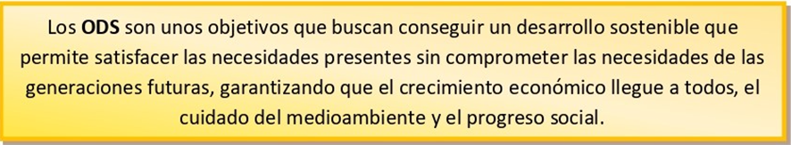
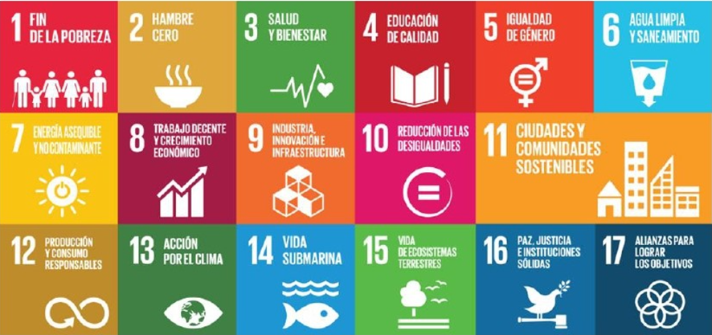

En los años 70, algunos ciudadanos comenzaron a ser conscientes del perjuicio que podían ocasionar los problemas medioambientales. Tras realizar diversos estudios, se concluyó que si el nivel de crecimiento de la población, las revoluciones industriales, la contaminación, la producción alimentaria y la explotación de recursos naturales no experimentaba un cambio, llegaríamos al límite del planeta en poco tiempo (100 años).
A partir de entonces, se ha observado mayor grado de compromiso con el problema del medio ambiente. Las grandes economías mundiales se reúnen periódicamente para tomar decisiones que pongan freno a estos problemas.

En 2000, 191 naciones firmaron los objetivos del milenio, que tenían fecha para cumplirse hasta el año 2015, y bastante de ellos se lograron. No obstante, el trabajo no ha terminado aún. En el año 2015, 193 naciones que forman parte de la Organización de las Naciones Unidas (ONU) firmaron los ODS 2015-2030, comúnmente llamado Agenda 2030.
Para lograr este desarrollo sostenible, se han fijado 17 objetivos:

Según el Informe de Desarrollo Sostenible de la Sustainable Develpment Solutions Network de 2023, España se encuentra en el lugar 16 del cumplimiento de estos objetivos. Hemos tenido pequeñas mejoras en todos los objetivos, destacando el ODS 5. Igualdad de género. También se observan avances en el ODS 3. Salud y Bienestar, el ODS 7. Energía asequible y no contaminante y el ODS 11. Ciudades sostenibles. En la otra cara de la moneda, los que peor hemos atendido han sido el ODS 13. Cambio climático y el ODS 15. Vida y ecosistemas terrestres.
Según el informe Contribución de las empresas españolas a la Agenda 2030: Resultados de la Consulta empresarial de desarrollo sostenible, 9 de cada 10 empresas contribuye a los ODS. Aunque, claro está, no todas lo hacen por igual. Dicha contribución se realiza más en grandes empresas (96,8%) que en pymes (81%) y autónomos (79%). El ODS 5. Igualdad de género, el ODS 8. Trabajo decente y crecimiento económico, el ODS 7. Energía asequible y no contaminante y el ODS 12. Producción y consumo responsable son lo que más ejercitan las empresas.
Podemos resumir los 17 ODS en las siguientes metas:
- Eliminar la pobreza y el hambre para conseguir una vida sana.
- Garantizar acceso universal al agua y la energía sostenible.
- Conseguir la igualdad efectiva de oportunidades mediante la educación y el trabajo decente.
- Acabar con las desigualdades, haciendo hincapié en las de género.
- Proteger el medio ambiente, los océanos y ecosistemas.
- Fomentar la colaboración entre los agentes económicos.